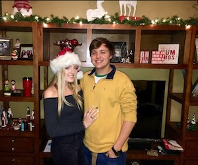

About Me
Hi, My name is David Austin Brassard but everyopne calls me Austin. I was born and raised in Houston Texas and that is where home is for me. I am the oldest of three kids havoing a younger brother and sister whom like myself love the game of baseball.l My most proud moment was winning the state championship game for the 6A division at my school where we got to play at the Globe Life Park in Arlington, which is the Texas Rangers stadium. In my free time i love to hang out with my buddies and play video games, hopefully one day i will get to work on one of my own. I am a massive fan of american muscle cars. I own a Dodge Charger and a Mustang GT but my goal in life is to purchase a Dodge Demon with cash. I love to joke around and visit new places. I lived in Orange County California, Austin Texas, and now in Atlanta although my first 18 years of life were spent in Houston.